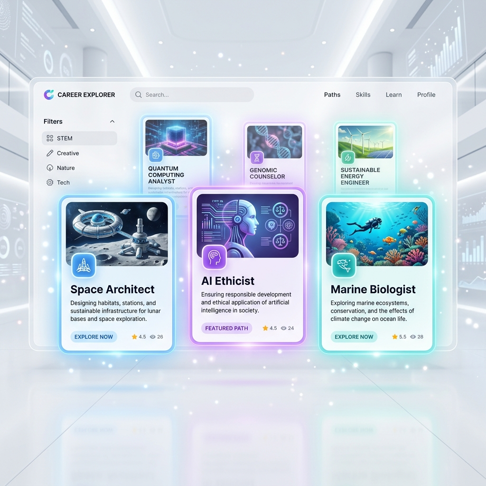

Design Your Future,
Supercharge Your Career
The all-in-one platform to discover, plan, and deliver your professional journey — faster and smarter.
Get started for Free →
Scientific Insights
Use advanced psychometric data to understand your core strengths and natural aptitude.
Expert Mentorship
Connect with certified career counselors who turn your test results into a strategic roadmap.
Global Opportunities
Access a library of 500+ careers and international study programs tailored to your profile.
The Path to Success
Your journey with CareerTrac is structured, scientific, and stress-free.
Discover
Take our 30-minute psychometric assessment to map your natural aptitude.
Analyze
Receive a comprehensive 30-page career report detailing your best-fit paths.
Consult
Meet 1-on-1 with a certified counselor to turn data into a strategic plan.
Conquer
Follow your personalized roadmap to your dream career or university.
Assessments for Every Stage
Science-backed evaluations designed to uncover your true potential.
Advanced Psychometric Testing
Identify your strengths, interests, and personality with precision.
1-on-1 Mentorship
Expert guidance to turn your results into a career plan.
Your Future,
On Paper.
Our proprietary Career Report is your personal blueprint. It includes Interest Maps, Personality Profiles, and specific College Recommendations.
View Sample Report →Why CareerTrac?
Don't leave your future to chance or guesswork.
Explore 500+
Careers
Get deep insights into every profession. From daily tasks to earning potential and required education.
Enter Library →
Career Boosters
Specialized programs to give you a competitive edge.
Join Young Botanist Certification Program in Organic Kitchen Gardening
InterestedOnline Tuitions And Homeschooling Services from the best rated E-Learning platform
InterestedProfessional Program in Image Consulting and Soft Skills
InterestedGuiding the Next Generation of Leaders
At CareerTrac, we believe that every student has a unique set of talents waiting to be discovered. Our mission is to provide the scientific tools and expert guidance needed to turn potential into performance.
Success Stories
Join the community of students who transformed their futures.
"The psychometric test was a wake-up call. I was about to choose engineering, but CareerTrac showed my true passion for Design."

Arjun Sharma
IIT Delhi Aspirant"CareerTrac didn't just give me a report; they gave me a mentor who helped me through the entire study-abroad process."
Priya Patel
University of Toronto"Highly recommend for professionals too. Helped me pivot from Marketing to Product Management effortlessly."
Rohan Mehta
Product ManagerFrequently Asked Questions
Everything you need to know before you start.
Is this test only for school students?
No! We have specialized modules for school students, college-goers, and working professionals looking to switch careers.
Can I take the assessment online?
Yes, the entire process is 100% digital. You can take the test and the counseling session from the comfort of your home.
How accurate is the science?
Our psychometric tools are built by leading psychologists and validated through data from over 1 million participants worldwide.
How long does the counseling session last?
A typical 1-on-1 session lasts between 45 to 60 minutes, focusing entirely on your personal career roadmap.